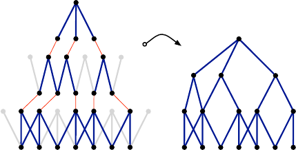
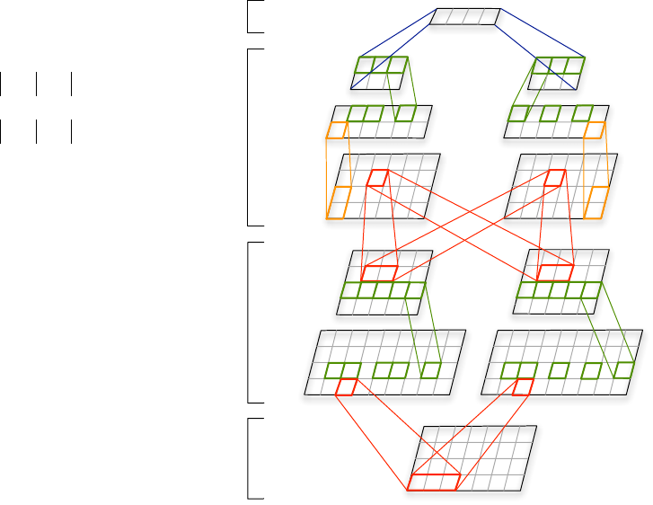

A Convolutional Neural Network for Modelling Sentences
Nal Kalchbrenner Edward Grefenstette
{nal.kalchbrenner, edward.grefenstette, phil.blunsom}@cs.ox.ac.uk
Department of Computer Science
University of Oxford
Phil Blunsom
Abstract
The ability to accurately represent sen-
tences is central to language understand-
ing. We describe a convolutional architec-
ture dubbed the Dynamic Convolutional
Neural Network (DCNN) that we adopt
for the semantic modelling of sentences.
The network uses Dynamic k-Max Pool-
ing, a global pooling operation over lin-
ear sequences. The network handles input
sentences of varying length and induces
a feature graph over the sentence that is
capable of explicitly capturing short and
long-range relations. The network does
not rely on a parse tree and is easily ap-
plicable to any language. We test the
DCNN in four experiments: small scale
binary and multi-class sentiment predic-
tion, six-way question classification and
Twitter sentiment prediction by distant su-
pervision. The network achieves excellent
performance in the first three tasks and a
greater than 25% error reduction in the last
task with respect to the strongest baseline.
1 Introduction
The aim of a sentence model is to analyse and
represent the semantic content of a sentence for
purposes of classification or generation. The sen-
tence modelling problem is at the core of many
tasks involving a degree of natural language com-
prehension. These tasks include sentiment analy-
sis, paraphrase detection, entailment recognition,
summarisation, discourse analysis, machine trans-
lation, grounded language learning and image re-
trieval. Since individual sentences are rarely ob-
served or not observed at all, one must represent
a sentence in terms of features that depend on the
words and short n-grams in the sentence that are
frequently observed. The core of a sentence model
involves a feature function that defines the process
The cat sat on the red mat
The cat sat on the red mat
Figure 1: Subgraph of a feature graph induced
over an input sentence in a Dynamic Convolu-
tional Neural Network. The full induced graph
has multiple subgraphs of this kind with a distinct
set of edges; subgraphs may merge at different
layers. The left diagram emphasises the pooled
nodes. The width of the convolutional filters is 3
and 2 respectively. With dynamic pooling, a fil-
ter with small width at the higher layers can relate
phrases far apart in the input sentence.
by which the features of the sentence are extracted
from the features of the words or n-grams.
Various types of models of meaning have been
proposed. Composition based methods have been
applied to vector representations of word meaning
obtained from co-occurrence statistics to obtain
vectors for longer phrases. In some cases, com-
position is defined by algebraic operations over
word meaning vectors to produce sentence mean-
ing vectors (Erk and Pad
´
o, 2008; Mitchell and
Lapata, 2008; Mitchell and Lapata, 2010; Tur-
ney, 2012; Erk, 2012; Clarke, 2012). In other
cases, a composition function is learned and ei-
ther tied to particular syntactic relations (Guevara,
2010; Zanzotto et al., 2010) or to particular word
types (Baroni and Zamparelli, 2010; Coecke et
al., 2010; Grefenstette and Sadrzadeh, 2011; Kart-
saklis and Sadrzadeh, 2013; Grefenstette, 2013).
Another approach represents the meaning of sen-
tences by way of automatically extracted logical
forms (Zettlemoyer and Collins, 2005).
arXiv:1404.2188v1 [cs.CL] 8 Apr 2014
A central class of models are those based on
neural networks. These range from basic neu-
ral bag-of-words or bag-of-n-grams models to the
more structured recursive neural networks and
to time-delay neural networks based on convo-
lutional operations (Collobert and Weston, 2008;
Socher et al., 2011; Kalchbrenner and Blunsom,
2013b). Neural sentence models have a num-
ber of advantages. They can be trained to obtain
generic vectors for words and phrases by predict-
ing, for instance, the contexts in which the words
and phrases occur. Through supervised training,
neural sentence models can fine-tune these vec-
tors to information that is specific to a certain
task. Besides comprising powerful classifiers as
part of their architecture, neural sentence models
can be used to condition a neural language model
to generate sentences word by word (Schwenk,
2012; Mikolov and Zweig, 2012; Kalchbrenner
and Blunsom, 2013a).
We define a convolutional neural network archi-
tecture and apply it to the semantic modelling of
sentences. The network handles input sequences
of varying length. The layers in the network in-
terleave one-dimensional convolutional layers and
dynamic k-max pooling layers. Dynamic k-max
pooling is a generalisation of the max pooling op-
erator. The max pooling operator is a non-linear
subsampling function that returns the maximum
of a set of values (LeCun et al., 1998). The op-
erator is generalised in two respects. First, k-
max pooling over a linear sequence of values re-
turns the subsequence of k maximum values in the
sequence, instead of the single maximum value.
Secondly, the pooling parameter k can be dynam-
ically chosen by making k a function of other as-
pects of the network or the input.
The convolutional layers apply one-
dimensional filters across each row of features in
the sentence matrix. Convolving the same filter
with the n-gram at every position in the sentence
allows the features to be extracted independently
of their position in the sentence. A convolutional
layer followed by a dynamic pooling layer and
a non-linearity form a feature map. Like in the
convolutional networks for object recognition
(LeCun et al., 1998), we enrich the representation
in the first layer by computing multiple feature
maps with different filters applied to the input
sentence. Subsequent layers also have multiple
feature maps computed by convolving filters with
all the maps from the layer below. The weights at
these layers form an order-4 tensor. The resulting
architecture is dubbed a Dynamic Convolutional
Neural Network.
Multiple layers of convolutional and dynamic
pooling operations induce a structured feature
graph over the input sentence. Figure 1 illustrates
such a graph. Small filters at higher layers can cap-
ture syntactic or semantic relations between non-
continuous phrases that are far apart in the input
sentence. The feature graph induces a hierarchical
structure somewhat akin to that in a syntactic parse
tree. The structure is not tied to purely syntactic
relations and is internal to the neural network.
We experiment with the network in four set-
tings. The first two experiments involve predict-
ing the sentiment of movie reviews (Socher et
al., 2013b). The network outperforms other ap-
proaches in both the binary and the multi-class ex-
periments. The third experiment involves the cat-
egorisation of questions in six question types in
the TREC dataset (Li and Roth, 2002). The net-
work matches the accuracy of other state-of-the-
art methods that are based on large sets of en-
gineered features and hand-coded knowledge re-
sources. The fourth experiment involves predict-
ing the sentiment of Twitter posts using distant su-
pervision (Go et al., 2009). The network is trained
on 1.6 million tweets labelled automatically ac-
cording to the emoticon that occurs in them. On
the hand-labelled test set, the network achieves a
greater than 25% reduction in the prediction error
with respect to the strongest unigram and bigram
baseline reported in Go et al. (2009).
The outline of the paper is as follows. Section 2
describes the background to the DCNN including
central concepts and related neural sentence mod-
els. Section 3 defines the relevant operators and
the layers of the network. Section 4 treats of the
induced feature graph and other properties of the
network. Section 5 discusses the experiments and
inspects the learnt feature detectors.
1
2 Background
The layers of the DCNN are formed by a convo-
lution operation followed by a pooling operation.
We begin with a review of related neural sentence
models. Then we describe the operation of one-
dimensional convolution and the classical Time-
Delay Neural Network (TDNN) (Hinton, 1989;
Waibel et al., 1990). By adding a max pooling
1
Code available at www.nal.co
layer to the network, the TDNN can be adopted as
a sentence model (Collobert and Weston, 2008).
2.1 Related Neural Sentence Models
Various neural sentence models have been de-
scribed. A general class of basic sentence models
is that of Neural Bag-of-Words (NBoW) models.
These generally consist of a projection layer that
maps words, sub-word units or n-grams to high
dimensional embeddings; the latter are then com-
bined component-wise with an operation such as
summation. The resulting combined vector is clas-
sified through one or more fully connected layers.
A model that adopts a more general structure
provided by an external parse tree is the Recursive
Neural Network (RecNN) (Pollack, 1990; K
¨
uchler
and Goller, 1996; Socher et al., 2011; Hermann
and Blunsom, 2013). At every node in the tree the
contexts at the left and right children of the node
are combined by a classical layer. The weights of
the layer are shared across all nodes in the tree.
The layer computed at the top node gives a repre-
sentation for the sentence. The Recurrent Neural
Network (RNN) is a special case of the recursive
network where the structure that is followed is a
simple linear chain (Gers and Schmidhuber, 2001;
Mikolov et al., 2011). The RNN is primarily used
as a language model, but may also be viewed as a
sentence model with a linear structure. The layer
computed at the last word represents the sentence.
Finally, a further class of neural sentence mod-
els is based on the convolution operation and the
TDNN architecture (Collobert and Weston, 2008;
Kalchbrenner and Blunsom, 2013b). Certain con-
cepts used in these models are central to the
DCNN and we describe them next.
2.2 Convolution
The one-dimensional convolution is an operation
between a vector of weights m ∈ R
m
and a vector
of inputs viewed as a sequence s ∈ R
s
. The vector
m is the filter of the convolution. Concretely, we
think of s as the input sentence and s
i
∈ R is a sin-
gle feature value associated with the i-th word in
the sentence. The idea behind the one-dimensional
convolution is to take the dot product of the vector
m with each m-gram in the sentence s to obtain
another sequence c:
c
j
= m
s
j−m+1:j
(1)
Equation 1 gives rise to two types of convolution
depending on the range of the index j. The narrow
type of convolution requires that s ≥ m and yields
s
1
s
1
s
s
s
s
c
1
c
5
c
5
Figure 2: Narrow and wide types of convolution.
The filter m has size m = 5.
a sequence c ∈ R
s−m+1
with j ranging from m
to s. The wide type of convolution does not have
requirements on s or m and yields a sequence c ∈
R
s+m−1
where the index j ranges from 1 to s +
m − 1. Out-of-range input values s
i
where i < 1
or i > s are taken to be zero. The result of the
narrow convolution is a subsequence of the result
of the wide convolution. The two types of one-
dimensional convolution are illustrated in Fig. 2.
The trained weights in the filter m correspond
to a linguistic feature detector that learns to recog-
nise a specific class of n-grams. These n-grams
have size n ≤ m, where m is the width of the
filter. Applying the weights m in a wide convo-
lution has some advantages over applying them in
a narrow one. A wide convolution ensures that all
weights in the filter reach the entire sentence, in-
cluding the words at the margins. This is particu-
larly significant when m is set to a relatively large
value such as 8 or 10. In addition, a wide convo-
lution guarantees that the application of the filter
m to the input sentence s always produces a valid
non-empty result c, independently of the width m
and the sentence length s. We next describe the
classical convolutional layer of a TDNN.
2.3 Time-Delay Neural Networks
A TDNN convolves a sequence of inputs s with a
set of weights m. As in the TDNN for phoneme
recognition (Waibel et al., 1990), the sequence s
is viewed as having a time dimension and the con-
volution is applied over the time dimension. Each
s
j
is often not just a single value, but a vector of
d values so that s ∈ R
d×s
. Likewise, m is a ma-
trix of weights of size d × m. Each row of m is
convolved with the corresponding row of s and the
convolution is usually of the narrow type. Multi-
ple convolutional layers may be stacked by taking
the resulting sequence c as input to the next layer.
The Max-TDNN sentence model is based on the
architecture of a TDNN (Collobert and Weston,
2008). In the model, a convolutional layer of the
narrow type is applied to the sentence matrix s,
where each column corresponds to the feature vec-

tor w
i
∈ R
d
of a word in the sentence:
s =
w
1
. . . w
s
(2)
To address the problem of varying sentence
lengths, the Max-TDNN takes the maximum of
each row in the resulting matrix c yielding a vector
of d values:
c
max
=
max(c
1,:
)
.
.
.
max(c
d,:
)
(3)
The aim is to capture the most relevant feature, i.e.
the one with the highest value, for each of the d
rows of the resulting matrix c. The fixed-sized
vector c
max
is then used as input to a fully con-
nected layer for classification.
The Max-TDNN model has many desirable
properties. It is sensitive to the order of the words
in the sentence and it does not depend on external
language-specific features such as dependency or
constituency parse trees. It also gives largely uni-
form importance to the signal coming from each
of the words in the sentence, with the exception
of words at the margins that are considered fewer
times in the computation of the narrow convolu-
tion. But the model also has some limiting as-
pects. The range of the feature detectors is lim-
ited to the span m of the weights. Increasing m or
stacking multiple convolutional layers of the nar-
row type makes the range of the feature detectors
larger; at the same time it also exacerbates the ne-
glect of the margins of the sentence and increases
the minimum size s of the input sentence required
by the convolution. For this reason higher-order
and long-range feature detectors cannot be easily
incorporated into the model. The max pooling op-
eration has some disadvantages too. It cannot dis-
tinguish whether a relevant feature in one of the
rows occurs just one or multiple times and it for-
gets the order in which the features occur. More
generally, the pooling factor by which the signal
of the matrix is reduced at once corresponds to
s −m+ 1; even for moderate values of s the pool-
ing factor can be excessive. The aim of the next
section is to address these limitations while pre-
serving the advantages.
3 Convolutional Neural Networks with
Dynamic k-Max Pooling
We model sentences using a convolutional archi-
tecture that alternates wide convolutional layers
K-Max pooling
(k=3)
Fully connected
layer
Folding
Wide
convolution
(m=2)
Dynamic
k-max pooling
(k= f(s) =5)
Projected
sentence
matrix
(s=7)
Wide
convolution
(m=3)
The cat sat on the red mat
Figure 3: A DCNN for the seven word input sen-
tence. Word embeddings have size d = 4. The
network has two convolutional layers with two
feature maps each. The widths of the filters at the
two layers are respectively 3 and 2. The (dynamic)
k-max pooling layers have values k of 5 and 3.
with dynamic pooling layers given by dynamic k-
max pooling. In the network the width of a feature
map at an intermediate layer varies depending on
the length of the input sentence; the resulting ar-
chitecture is the Dynamic Convolutional Neural
Network. Figure 3 represents a DCNN. We pro-
ceed to describe the network in detail.
3.1 Wide Convolution
Given an input sentence, to obtain the first layer of
the DCNN we take the embedding w
i
∈ R
d
for
each word in the sentence and construct the sen-
tence matrix s ∈ R
d×s
as in Eq. 2. The values
in the embeddings w
i
are parameters that are op-
timised during training. A convolutional layer in
the network is obtained by convolving a matrix of
weights m ∈ R
d×m
with the matrix of activations
at the layer below. For example, the second layer
is obtained by applying a convolution to the sen-
tence matrix s itself. Dimension d and filter width
m are hyper-parameters of the network. We let the
operations be wide one-dimensional convolutions
as described in Sect. 2.2. The resulting matrix c
has dimensions d × (s + m − 1).
3.2 k-Max Pooling
We next describe a pooling operation that is a gen-
eralisation of the max pooling over the time di-
mension used in the Max-TDNN sentence model
and different from the local max pooling opera-
tions applied in a convolutional network for object
recognition (LeCun et al., 1998). Given a value
k and a sequence p ∈ R
p
of length p ≥ k, k-
max pooling selects the subsequence p
k
max
of the
k highest values of p. The order of the values in
p
k
max
corresponds to their original order in p.
The k-max pooling operation makes it possible
to pool the k most active features in p that may be
a number of positions apart; it preserves the order
of the features, but is insensitive to their specific
positions. It can also discern more finely the num-
ber of times the feature is highly activated in p
and the progression by which the high activations
of the feature change across p. The k-max pooling
operator is applied in the network after the topmost
convolutional layer. This guarantees that the input
to the fully connected layers is independent of the
length of the input sentence. But, as we see next, at
intermediate convolutional layers the pooling pa-
rameter k is not fixed, but is dynamically selected
in order to allow for a smooth extraction of higher-
order and longer-range features.
3.3 Dynamic k-Max Pooling
A dynamic k-max pooling operation is a k-max
pooling operation where we let k be a function of
the length of the sentence and the depth of the net-
work. Although many functions are possible, we
simply model the pooling parameter as follows:
k
l
= max( k
top
,
L − l
L
s ) (4)
where l is the number of the current convolutional
layer to which the pooling is applied and L is the
total number of convolutional layers in the net-
work; k
top
is the fixed pooling parameter for the
topmost convolutional layer (Sect. 3.2). For in-
stance, in a network with three convolutional lay-
ers and k
top
= 3, for an input sentence of length
s = 18, the pooling parameter at the first layer
is k
1
= 12 and the pooling parameter at the sec-
ond layer is k
2
= 6; the third layer has the fixed
pooling parameter k
3
= k
top
= 3. Equation 4
is a model of the number of values needed to de-
scribe the relevant parts of the progression of an
l-th order feature over a sentence of length s. For
an example in sentiment prediction, according to
the equation a first order feature such as a posi-
tive word occurs at most k
1
times in a sentence of
length s, whereas a second order feature such as a
negated phrase or clause occurs at most k
2
times.
3.4 Non-linear Feature Function
After (dynamic) k-max pooling is applied to the
result of a convolution, a bias b ∈ R
d
and a non-
linear function g are applied component-wise to
the pooled matrix. There is a single bias value for
each row of the pooled matrix.
If we temporarily ignore the pooling layer, we
may state how one computes each d-dimensional
column a in the matrix a resulting after the convo-
lutional and non-linear layers. Define M to be the
matrix of diagonals:
M = [diag(m
:,1
), . . . , diag(m
:,m
)] (5)
where m are the weights of the d filters of the wide
convolution. Then after the first pair of a convolu-
tional and a non-linear layer, each column a in the
matrix a is obtained as follows, for some index j:
a = g
M
w
j
.
.
.
w
j+m−1
+ b
(6)
Here a is a column of first order features. Sec-
ond order features are similarly obtained by ap-
plying Eq. 6 to a sequence of first order features
a
j
, ..., a
j+m
−1
with another weight matrix M
.
Barring pooling, Eq. 6 represents a core aspect
of the feature extraction function and has a rather
general form that we return to below. Together
with pooling, the feature function induces position
invariance and makes the range of higher-order
features variable.
3.5 Multiple Feature Maps
So far we have described how one applies a wide
convolution, a (dynamic) k-max pooling layer and
a non-linear function to the input sentence ma-
trix to obtain a first order feature map. The three
operations can be repeated to yield feature maps
of increasing order and a network of increasing
depth. We denote a feature map of the i-th order
by F
i
. As in convolutional networks for object
recognition, to increase the number of learnt fea-
ture detectors of a certain order, multiple feature
maps F
i
1
, . . . , F
i
n
may be computed in parallel at
the same layer. Each feature map F
i
j
is computed
by convolving a distinct set of filters arranged in
a matrix m
i
j,k
with each feature map F
i−1
k
of the
lower order i − 1 and summing the results:
F
i
j
=
n
k=1
m
i
j,k
∗ F
i−1
k
(7)
where ∗ indicates the wide convolution. The
weights m
i
j,k
form an order-4 tensor. After the
wide convolution, first dynamic k-max pooling
and then the non-linear function are applied indi-
vidually to each map.
3.6 Folding
In the formulation of the network so far, feature
detectors applied to an individual row of the sen-
tence matrix s can have many orders and create
complex dependencies across the same rows in
multiple feature maps. Feature detectors in differ-
ent rows, however, are independent of each other
until the top fully connected layer. Full depen-
dence between different rows could be achieved
by making M in Eq. 5 a full matrix instead of
a sparse matrix of diagonals. Here we explore a
simpler method called folding that does not intro-
duce any additional parameters. After a convo-
lutional layer and before (dynamic) k-max pool-
ing, one just sums every two rows in a feature map
component-wise. For a map of d rows, folding re-
turns a map of d/2 rows, thus halving the size of
the representation. With a folding layer, a feature
detector of the i-th order depends now on two rows
of feature values in the lower maps of order i − 1.
This ends the description of the DCNN.
4 Properties of the Sentence Model
We describe some of the properties of the sentence
model based on the DCNN. We describe the no-
tion of the feature graph induced over a sentence
by the succession of convolutional and pooling
layers. We briefly relate the properties to those of
other neural sentence models.
4.1 Word and n-Gram Order
One of the basic properties is sensitivity to the or-
der of the words in the input sentence. For most
applications and in order to learn fine-grained fea-
ture detectors, it is beneficial for a model to be able
to discriminate whether a specific n-gram occurs
in the input. Likewise, it is beneficial for a model
to be able to tell the relative position of the most
relevant n-grams. The network is designed to cap-
ture these two aspects. The filters m of the wide
convolution in the first layer can learn to recognise
specific n-grams that have size less or equal to the
filter width m; as we see in the experiments, m in
the first layer is often set to a relatively large value
such as 10. The subsequence of n-grams extracted
by the generalised pooling operation induces in-
variance to absolute positions, but maintains their
order and relative positions.
As regards the other neural sentence models, the
class of NBoW models is by definition insensitive
to word order. A sentence model based on a recur-
rent neural network is sensitive to word order, but
it has a bias towards the latest words that it takes as
input (Mikolov et al., 2011). This gives the RNN
excellent performance at language modelling, but
it is suboptimal for remembering at once the n-
grams further back in the input sentence. Sim-
ilarly, a recursive neural network is sensitive to
word order but has a bias towards the topmost
nodes in the tree; shallower trees mitigate this ef-
fect to some extent (Socher et al., 2013a). As seen
in Sect. 2.3, the Max-TDNN is sensitive to word
order, but max pooling only picks out a single n-
gram feature in each row of the sentence matrix.
4.2 Induced Feature Graph
Some sentence models use internal or external
structure to compute the representation for the in-
put sentence. In a DCNN, the convolution and
pooling layers induce an internal feature graph
over the input. A node from a layer is connected
to a node from the next higher layer if the lower
node is involved in the convolution that computes
the value of the higher node. Nodes that are not
selected by the pooling operation at a layer are
dropped from the graph. After the last pooling
layer, the remaining nodes connect to a single top-
most root. The induced graph is a connected, di-
rected acyclic graph with weighted edges and a
root node; two equivalent representations of an
induced graph are given in Fig. 1. In a DCNN
without folding layers, each of the d rows of the
sentence matrix induces a subgraph that joins the
other subgraphs only at the root node. Each sub-
graph may have a different shape that reflects the
kind of relations that are detected in that subgraph.
The effect of folding layers is to join pairs of sub-
graphs at lower layers before the top root node.
Convolutional networks for object recognition
also induce a feature graph over the input image.
What makes the feature graph of a DCNN pecu-
liar is the global range of the pooling operations.
The (dynamic) k-max pooling operator can draw
together features that correspond to words that are
many positions apart in the sentence. Higher-order
features have highly variable ranges that can be ei-
ther short and focused or global and long as the
input sentence. Likewise, the edges of a subgraph
in the induced graph reflect these varying ranges.
The subgraphs can either be localised to one or
more parts of the sentence or spread more widely
across the sentence. This structure is internal to
the network and is defined by the forward propa-
gation of the input through the network.
Of the other sentence models, the NBoW is a
shallow model and the RNN has a linear chain
structure. The subgraphs induced in the Max-
TDNN model have a single fixed-range feature ob-
tained through max pooling. The recursive neural
network follows the structure of an external parse
tree. Features of variable range are computed at
each node of the tree combining one or more of
the children of the tree. Unlike in a DCNN, where
one learns a clear hierarchy of feature orders, in
a RecNN low order features like those of sin-
gle words can be directly combined with higher
order features computed from entire clauses. A
DCNN generalises many of the structural aspects
of a RecNN. The feature extraction function as
stated in Eq. 6 has a more general form than that
in a RecNN, where the value of m is generally 2.
Likewise, the induced graph structure in a DCNN
is more general than a parse tree in that it is not
limited to syntactically dictated phrases; the graph
structure can capture short or long-range seman-
tic relations between words that do not necessar-
ily correspond to the syntactic relations in a parse
tree. The DCNN has internal input-dependent
structure and does not rely on externally provided
parse trees, which makes the DCNN directly ap-
plicable to hard-to-parse sentences such as tweets
and to sentences from any language.
5 Experiments
We test the network on four different experiments.
We begin by specifying aspects of the implemen-
tation and the training of the network. We then re-
late the results of the experiments and we inspect
the learnt feature detectors.
5.1 Training
In each of the experiments, the top layer of the
network has a fully connected layer followed by
a softmax non-linearity that predicts the probabil-
ity distribution over classes given the input sen-
tence. The network is trained to minimise the
cross-entropy of the predicted and true distribu-
tions; the objective includes an L
2
regularisation
Classifier Fine-grained (%) Binary (%)
NB 41.0 81.8
BINB 41.9 83.1
SVM 40.7 79.4
RECNTN 45.7 85.4
MAX-TDNN 37.4 77.1
NBOW 42.4 80.5
DCNN 48.5 86.8
Table 1: Accuracy of sentiment prediction in the
movie reviews dataset. The first four results are
reported from Socher et al. (2013b). The baselines
NB and BINB are Naive Bayes classifiers with,
respectively, unigram features and unigram and bi-
gram features. SVM is a support vector machine
with unigram and bigram features. RECNTN is a
recursive neural network with a tensor-based fea-
ture function, which relies on external structural
features given by a parse tree and performs best
among the RecNNs.
term over the parameters. The set of parameters
comprises the word embeddings, the filter weights
and the weights from the fully connected layers.
The network is trained with mini-batches by back-
propagation and the gradient-based optimisation is
performed using the Adagrad update rule (Duchi
et al., 2011). Using the well-known convolution
theorem, we can compute fast one-dimensional
linear convolutions at all rows of an input matrix
by using Fast Fourier Transforms. To exploit the
parallelism of the operations, we train the network
on a GPU. A Matlab implementation processes
multiple millions of input sentences per hour on
one GPU, depending primarily on the number of
layers used in the network.
5.2 Sentiment Prediction in Movie Reviews
The first two experiments concern the prediction
of the sentiment of movie reviews in the Stanford
Sentiment Treebank (Socher et al., 2013b). The
output variable is binary in one experiment and
can have five possible outcomes in the other: neg-
ative, somewhat negative, neutral, somewhat posi-
tive, positive. In the binary case, we use the given
splits of 6920 training, 872 development and 1821
test sentences. Likewise, in the fine-grained case,
we use the standard 8544/1101/2210 splits. La-
belled phrases that occur as subparts of the train-
ing sentences are treated as independent training
instances. The size of the vocabulary is 15448.
Table 1 details the results of the experiments.

Classifier Features Acc. (%)
HIER
unigram, POS, head chunks 91.0
NE, semantic relations
MAXENT
unigram, bigram, trigram 92.6
POS, chunks, NE, supertags
CCG parser, WordNet
MAXENT
unigram, bigram, trigram 93.6
POS, wh-word, head word
word shape, parser
hypernyms, WordNet
SVM
unigram, POS, wh-word 95.0
head word, parser
hypernyms, WordNet
60 hand-coded rules
MAX-TDNN unsupervised vectors 84.4
NBOW unsupervised vectors 88.2
DCNN unsupervised vectors 93.0
Table 2: Accuracy of six-way question classifica-
tion on the TREC questions dataset. The second
column details the external features used in the
various approaches. The first four results are re-
spectively from Li and Roth (2002), Blunsom et al.
(2006), Huang et al. (2008) and Silva et al. (2011).
In the three neural sentence models—the Max-
TDNN, the NBoW and the DCNN—the word vec-
tors are parameters of the models that are ran-
domly initialised; their dimension d is set to 48.
The Max-TDNN has a filter of width 6 in its nar-
row convolution at the first layer; shorter phrases
are padded with zero vectors. The convolu-
tional layer is followed by a non-linearity, a max-
pooling layer and a softmax classification layer.
The NBoW sums the word vectors and applies a
non-linearity followed by a softmax classification
layer. The adopted non-linearity is the tanh func-
tion. The hyper parameters of the DCNN are as
follows. The binary result is based on a DCNN
that has a wide convolutional layer followed by a
folding layer, a dynamic k-max pooling layer and
a non-linearity; it has a second wide convolutional
layer followed by a folding layer, a k-max pooling
layer and a non-linearity. The width of the convo-
lutional filters is 7 and 5, respectively. The value
of k for the top k-max pooling is 4. The num-
ber of feature maps at the first convolutional layer
is 6; the number of maps at the second convolu-
tional layer is 14. The network is topped by a soft-
max classification layer. The DCNN for the fine-
grained result has the same architecture, but the
filters have size 10 and 7, the top pooling parame-
ter k is 5 and the number of maps is, respectively,
6 and 12. The networks use the tanh non-linear
Classifier Accuracy (%)
SVM 81.6
BINB 82.7
MAXENT 83.0
MAX-TDNN 78.8
NBOW 80.9
DCNN 87.4
Table 3: Accuracy on the Twitter sentiment
dataset. The three non-neural classifiers are based
on unigram and bigram features; the results are re-
ported from (Go et al., 2009).
function. At training time we apply dropout to the
penultimate layer after the last tanh non-linearity
(Hinton et al., 2012).
We see that the DCNN significantly outper-
forms the other neural and non-neural models.
The NBoW performs similarly to the non-neural
n-gram based classifiers. The Max-TDNN per-
forms worse than the NBoW likely due to the ex-
cessive pooling of the max pooling operation; the
latter discards most of the sentiment features of the
words in the input sentence. Besides the RecNN
that uses an external parser to produce structural
features for the model, the other models use n-
gram based or neural features that do not require
external resources or additional annotations. In the
next experiment we compare the performance of
the DCNN with those of methods that use heavily
engineered resources.
5.3 Question Type Classification
As an aid to question answering, a question may
be classified as belonging to one of many question
types. The TREC questions dataset involves six
different question types, e.g. whether the question
is about a location, about a person or about some
numeric information (Li and Roth, 2002). The
training dataset consists of 5452 labelled questions
whereas the test dataset consists of 500 questions.
The results are reported in Tab. 2. The non-
neural approaches use a classifier over a large
number of manually engineered features and
hand-coded resources. For instance, Blunsom et
al. (2006) present a Maximum Entropy model that
relies on 26 sets of syntactic and semantic fea-
tures including unigrams, bigrams, trigrams, POS
tags, named entity tags, structural relations from
a CCG parse and WordNet synsets. We evaluate
the three neural models on this dataset with mostly
the same hyper-parameters as in the binary senti-
POSITIVE
lovelycomedicmomentsandseveralfineperformances
goodscript,gooddialogue,funny
sustainsthroughoutisdaring,inventiveand
wellwritten,nicelyactedandbeautifully
remarkablysolidandsubtlysatiricaltourde
NEGATIVE
,nonexistentplotandpretentiousvisualstyle
itfailsthemostbasictestas
sostupid,soillconceived,
,toodullandpretentioustobe
hoodratsbutttheiruglyheadsin
'NOT'
n'thaveanyhugelaughsinits
nomovement,no,notmuch
n'tstopmefromenjoyingmuchof
notthatkungpowisn'tfunny
notamomentthatisnotfalse
'TOO'
,toodullandpretentioustobe
eithertooseriousortoolighthearted,
tooslow,toolongandtoo
feelstooformulaicandtoofamiliarto
istoopredictableandtooselfconscious
Figure 4: Top five 7-grams at four feature detectors in the first layer of the network.
ment experiment of Sect. 5.2. As the dataset is
rather small, we use lower-dimensional word vec-
tors with d = 32 that are initialised with embed-
dings trained in an unsupervised way to predict
contexts of occurrence (Turian et al., 2010). The
DCNN uses a single convolutional layer with fil-
ters of size 8 and 5 feature maps. The difference
between the performance of the DCNN and that of
the other high-performing methods in Tab. 2 is not
significant (p < 0.09). Given that the only labelled
information used to train the network is the train-
ing set itself, it is notable that the network matches
the performance of state-of-the-art classifiers that
rely on large amounts of engineered features and
rules and hand-coded resources.
5.4 Twitter Sentiment Prediction with
Distant Supervision
In our final experiment, we train the models on a
large dataset of tweets, where a tweet is automat-
ically labelled as positive or negative depending
on the emoticon that occurs in it. The training set
consists of 1.6 million tweets with emoticon-based
labels and the test set of about 400 hand-annotated
tweets. We preprocess the tweets minimally fol-
lowing the procedure described in Go et al. (2009);
in addition, we also lowercase all the tokens. This
results in a vocabulary of 76643 word types. The
architecture of the DCNN and of the other neural
models is the same as the one used in the binary
experiment of Sect. 5.2. The randomly initialised
word embeddings are increased in length to a di-
mension of d = 60. Table 3 reports the results of
the experiments. We see a significant increase in
the performance of the DCNN with respect to the
non-neural n-gram based classifiers; in the pres-
ence of large amounts of training data these clas-
sifiers constitute particularly strong baselines. We
see that the ability to train a sentiment classifier on
automatically extracted emoticon-based labels ex-
tends to the DCNN and results in highly accurate
performance. The difference in performance be-
tween the DCNN and the NBoW further suggests
that the ability of the DCNN to both capture fea-
tures based on long n-grams and to hierarchically
combine these features is highly beneficial.
5.5 Visualising Feature Detectors
A filter in the DCNN is associated with a feature
detector or neuron that learns during training to
be particularly active when presented with a spe-
cific sequence of input words. In the first layer, the
sequence is a continuous n-gram from the input
sentence; in higher layers, sequences can be made
of multiple separate n-grams. We visualise the
feature detectors in the first layer of the network
trained on the binary sentiment task (Sect. 5.2).
Since the filters have width 7, for each of the 288
feature detectors we rank all 7-grams occurring in
the validation and test sets according to their ac-
tivation of the detector. Figure 5.2 presents the
top five 7-grams for four feature detectors. Be-
sides the expected detectors for positive and nega-
tive sentiment, we find detectors for particles such
as ‘not’ that negate sentiment and such as ‘too’
that potentiate sentiment. We find detectors for
multiple other notable constructs including ‘all’,
‘or’, ‘with...that’, ‘as...as’. The feature detectors
learn to recognise not just single n-grams, but pat-
terns within n-grams that have syntactic, semantic
or structural significance.
6 Conclusion
We have described a dynamic convolutional neural
network that uses the dynamic k-max pooling op-
erator as a non-linear subsampling function. The
feature graph induced by the network is able to
capture word relations of varying size. The net-
work achieves high performance on question and
sentiment classification without requiring external
features as provided by parsers or other resources.
Acknowledgements
We thank Nando de Freitas and Yee Whye Teh
for great discussions on the paper. This work was
supported by a Xerox Foundation Award, EPSRC
grant number EP/F042728/1, and EPSRC grant
number EP/K036580/1.
References
Marco Baroni and Roberto Zamparelli. 2010. Nouns
are vectors, adjectives are matrices: Representing
adjective-noun constructions in semantic space. In
EMNLP, pages 1183–1193. ACL.
Phil Blunsom, Krystle Kocik, and James R. Curran.
2006. Question classification with log-linear mod-
els. In SIGIR ’06: Proceedings of the 29th an-
nual international ACM SIGIR conference on Re-
search and development in information retrieval,
pages 615–616, New York, NY, USA. ACM.
Daoud Clarke. 2012. A context-theoretic frame-
work for compositionality in distributional seman-
tics. Computational Linguistics, 38(1):41–71.
Bob Coecke, Mehrnoosh Sadrzadeh, and Stephen
Clark. 2010. Mathematical Foundations for a Com-
positional Distributional Model of Meaning. March.
Ronan Collobert and Jason Weston. 2008. A unified
architecture for natural language processing: Deep
neural networks with multitask learning. In Interna-
tional Conference on Machine Learning, ICML.
John Duchi, Elad Hazan, and Yoram Singer. 2011.
Adaptive subgradient methods for online learning
and stochastic optimization. J. Mach. Learn. Res.,
12:2121–2159, July.
Katrin Erk and Sebastian Pad
´
o. 2008. A structured
vector space model for word meaning in context.
Proceedings of the Conference on Empirical Meth-
ods in Natural Language Processing - EMNLP ’08,
(October):897.
Katrin Erk. 2012. Vector space models of word mean-
ing and phrase meaning: A survey. Language and
Linguistics Compass, 6(10):635–653.
Felix A. Gers and Jrgen Schmidhuber. 2001. Lstm
recurrent networks learn simple context-free and
context-sensitive languages. IEEE Transactions on
Neural Networks, 12(6):1333–1340.
Alec Go, Richa Bhayani, and Lei Huang. 2009. Twit-
ter sentiment classification using distant supervision.
Processing, pages 1–6.
Edward Grefenstette and Mehrnoosh Sadrzadeh. 2011.
Experimental support for a categorical composi-
tional distributional model of meaning. In Proceed-
ings of the Conference on Empirical Methods in Nat-
ural Language Processing, pages 1394–1404. Asso-
ciation for Computational Linguistics.
Edward Grefenstette. 2013. Category-theoretic
quantitative compositional distributional models
of natural language semantics. arXiv preprint
arXiv:1311.1539.
Emiliano Guevara. 2010. Modelling Adjective-Noun
Compositionality by Regression. ESSLLI’10 Work-
shop on Compositionality and Distributional Se-
mantic Models.
Karl Moritz Hermann and Phil Blunsom. 2013. The
Role of Syntax in Vector Space Models of Composi-
tional Semantics. In Proceedings of the 51st Annual
Meeting of the Association for Computational Lin-
guistics (Volume 1: Long Papers), Sofia, Bulgaria,
August. Association for Computational Linguistics.
Forthcoming.
Geoffrey E. Hinton, Nitish Srivastava, Alex
Krizhevsky, Ilya Sutskever, and Ruslan Salakhut-
dinov. 2012. Improving neural networks by
preventing co-adaptation of feature detectors.
CoRR, abs/1207.0580.
Geoffrey E. Hinton. 1989. Connectionist learning pro-
cedures. Artif. Intell., 40(1-3):185–234.
Zhiheng Huang, Marcus Thint, and Zengchang Qin.
2008. Question classification using head words and
their hypernyms. In Proceedings of the Conference
on Empirical Methods in Natural Language Pro-
cessing, EMNLP ’08, pages 927–936, Stroudsburg,
PA, USA. Association for Computational Linguis-
tics.
Nal Kalchbrenner and Phil Blunsom. 2013a. Recur-
rent continuous translation models. In Proceedings
of the 2013 Conference on Empirical Methods in
Natural Language Processing, Seattle, October. As-
sociation for Computational Linguistics.
Nal Kalchbrenner and Phil Blunsom. 2013b. Recur-
rent Convolutional Neural Networks for Discourse
Compositionality. In Proceedings of the Workshop
on Continuous Vector Space Models and their Com-
positionality, Sofia, Bulgaria, August. Association
for Computational Linguistics.
Dimitri Kartsaklis and Mehrnoosh Sadrzadeh. 2013.
Prior disambiguation of word tensors for construct-
ing sentence vectors. In Proceedings of the 2013
Conference on Empirical Methods in Natural Lan-
guage Processing (EMNLP), Seattle, USA, October.
Andreas K
¨
uchler and Christoph Goller. 1996. Induc-
tive learning in symbolic domains using structure-
driven recurrent neural networks. In G
¨
unther G
¨
orz
and Steffen H
¨
olldobler, editors, KI, volume 1137 of
Lecture Notes in Computer Science, pages 183–197.
Springer.
Yann LeCun, L
´
eon Bottou, Yoshua Bengio, and Patrick
Haffner. 1998. Gradient-based learning applied to
document recognition. Proceedings of the IEEE,
86(11):2278–2324, November.
Xin Li and Dan Roth. 2002. Learning question clas-
sifiers. In Proceedings of the 19th international
conference on Computational linguistics-Volume 1,
pages 1–7. Association for Computational Linguis-
tics.
Tomas Mikolov and Geoffrey Zweig. 2012. Context
dependent recurrent neural network language model.
In SLT, pages 234–239.
Tomas Mikolov, Stefan Kombrink, Lukas Burget, Jan
Cernock
´
y, and Sanjeev Khudanpur. 2011. Exten-
sions of recurrent neural network language model.
In ICASSP, pages 5528–5531. IEEE.
Jeff Mitchell and Mirella Lapata. 2008. Vector-based
models of semantic composition. In Proceedings of
ACL, volume 8.
Jeff Mitchell and Mirella Lapata. 2010. Composition
in distributional models of semantics. Cognitive Sci-
ence, 34(8):1388–1429.
Jordan B. Pollack. 1990. Recursive distributed repre-
sentations. Artificial Intelligence, 46:77–105.
Holger Schwenk. 2012. Continuous space translation
models for phrase-based statistical machine transla-
tion. In COLING (Posters), pages 1071–1080.
Joo Silva, Lusa Coheur, AnaCristina Mendes, and An-
dreas Wichert. 2011. From symbolic to sub-
symbolic information in question classification. Ar-
tificial Intelligence Review, 35(2):137–154.
Richard Socher, Jeffrey Pennington, Eric H. Huang,
Andrew Y. Ng, and Christopher D. Manning. 2011.
Semi-Supervised Recursive Autoencoders for Pre-
dicting Sentiment Distributions. In Proceedings of
the 2011 Conference on Empirical Methods in Nat-
ural Language Processing (EMNLP).
Richard Socher, Quoc V. Le, Christopher D. Manning,
and Andrew Y. Ng. 2013a. Grounded Composi-
tional Semantics for Finding and Describing Images
with Sentences. In Transactions of the Association
for Computational Linguistics (TACL).
Richard Socher, Alex Perelygin, Jean Wu, Jason
Chuang, Christopher D. Manning, Andrew Y. Ng,
and Christopher Potts. 2013b. Recursive deep mod-
els for semantic compositionality over a sentiment
treebank. In Proceedings of the 2013 Conference on
Empirical Methods in Natural Language Process-
ing, pages 1631–1642, Stroudsburg, PA, October.
Association for Computational Linguistics.
Joseph Turian, Lev Ratinov, and Yoshua Bengio. 2010.
Word representations: a simple and general method
for semi-supervised learning. In Proceedings of the
48th Annual Meeting of the Association for Compu-
tational Linguistics, pages 384–394. Association for
Computational Linguistics.
Peter Turney. 2012. Domain and function: A dual-
space model of semantic relations and compositions.
J. Artif. Intell. Res.(JAIR), 44:533–585.
Alexander Waibel, Toshiyuki Hanazawa, Geofrey Hin-
ton, Kiyohiro Shikano, and Kevin J. Lang. 1990.
Readings in speech recognition. chapter Phoneme
Recognition Using Time-delay Neural Networks,
pages 393–404. Morgan Kaufmann Publishers Inc.,
San Francisco, CA, USA.
Fabio Massimo Zanzotto, Ioannis Korkontzelos,
Francesca Fallucchi, and Suresh Manandhar. 2010.
Estimating linear models for compositional distri-
butional semantics. In Proceedings of the 23rd In-
ternational Conference on Computational Linguis-
tics, pages 1263–1271. Association for Computa-
tional Linguistics.
Luke S. Zettlemoyer and Michael Collins. 2005.
Learning to map sentences to logical form: Struc-
tured classification with probabilistic categorial
grammars. In UAI, pages 658–666. AUAI Press.